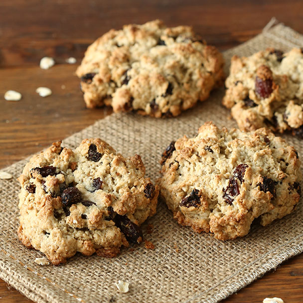

Oatmeal Raisin Cookies

About the Recipe
An oatmeal raisin cookie is a type of drop cookie made from an oatmeal-based dough with raisins. Its ingredients also typically include
flour, sugar, eggs, salt, and spices. A descendant of the Scottish oatcake,
the oatmeal raisin cookie has become one of the most popular cookies in the United States.
Ingredients
- ¾ cup butter, softened
- ¾ cup white sugar
- ¾ cup packed light brown sugar
- 2 eggs
- 1 teaspoon vanilla extract
- 1 ¼ cups all-purpose flour
- 1 teaspoon baking soda
- ¾ teaspoon ground cinnamon
- ½ teaspoon salt
- 2 ¾ cups rolled oats
- 1 cup raisins
Instructions
- Preheat oven to 375 degrees F (190 degrees C).
In large bowl, cream together butter, white sugar, and brown sugar until smooth. Beat in the eggs and vanilla until fluffy. Stir together flour, baking soda, cinnamon, and salt. Gradually beat into butter mixture. Stir in oats and raisins. Drop by teaspoonfuls onto ungreased cookie sheets.
- Bake 8 to 10 minutes in the preheated oven, or until golden brown. Cool slightly, remove from sheet to wire rack. Cool completely.